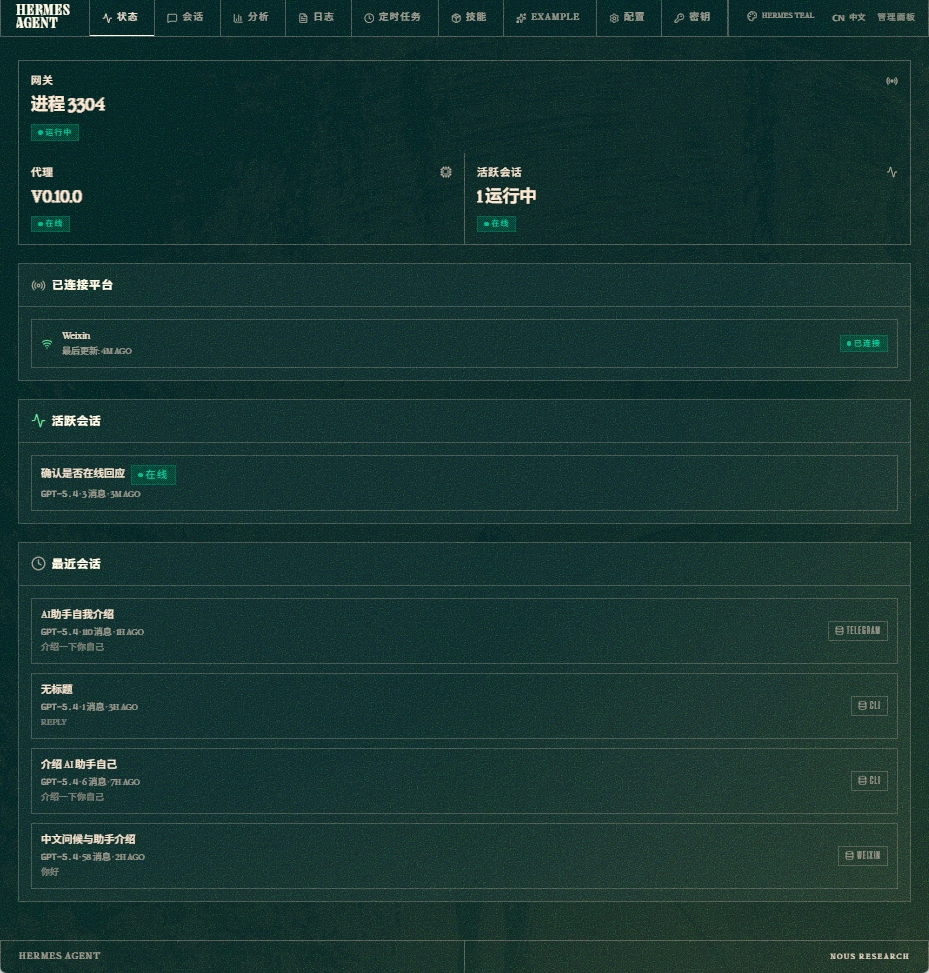
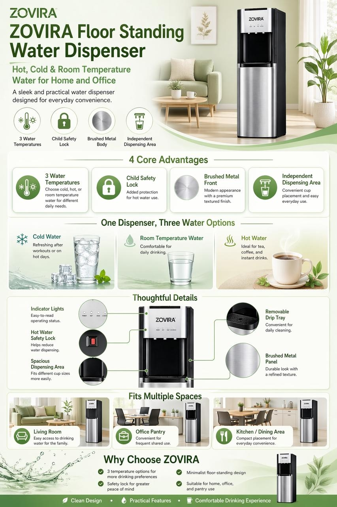
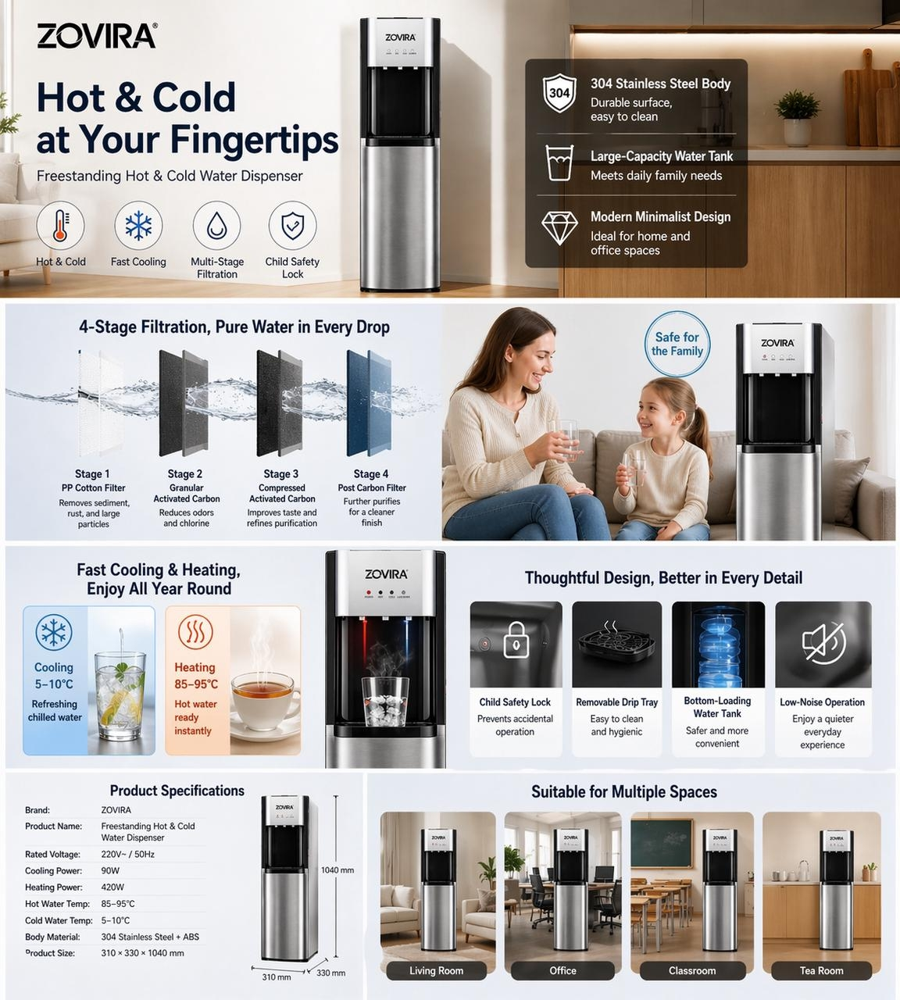
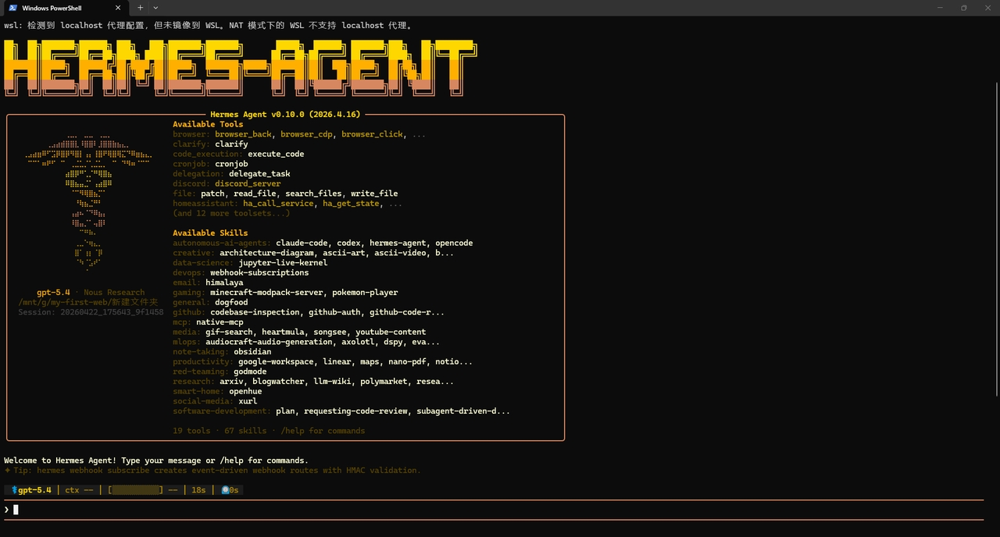
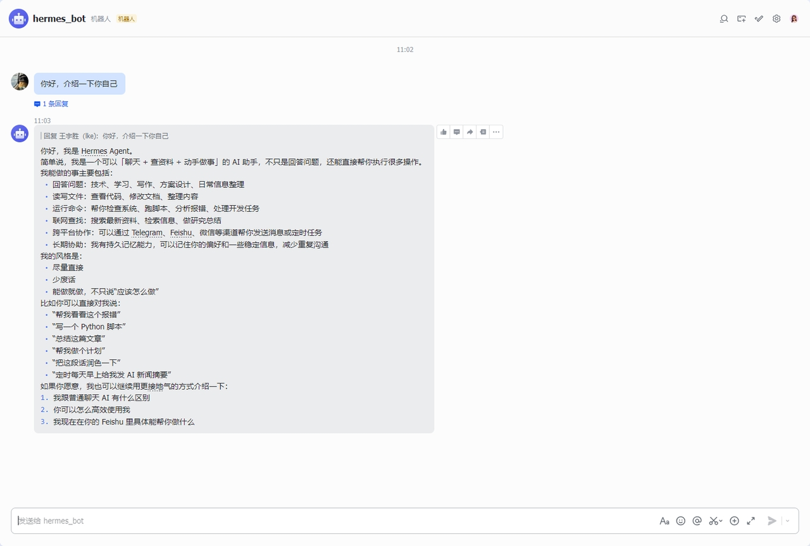
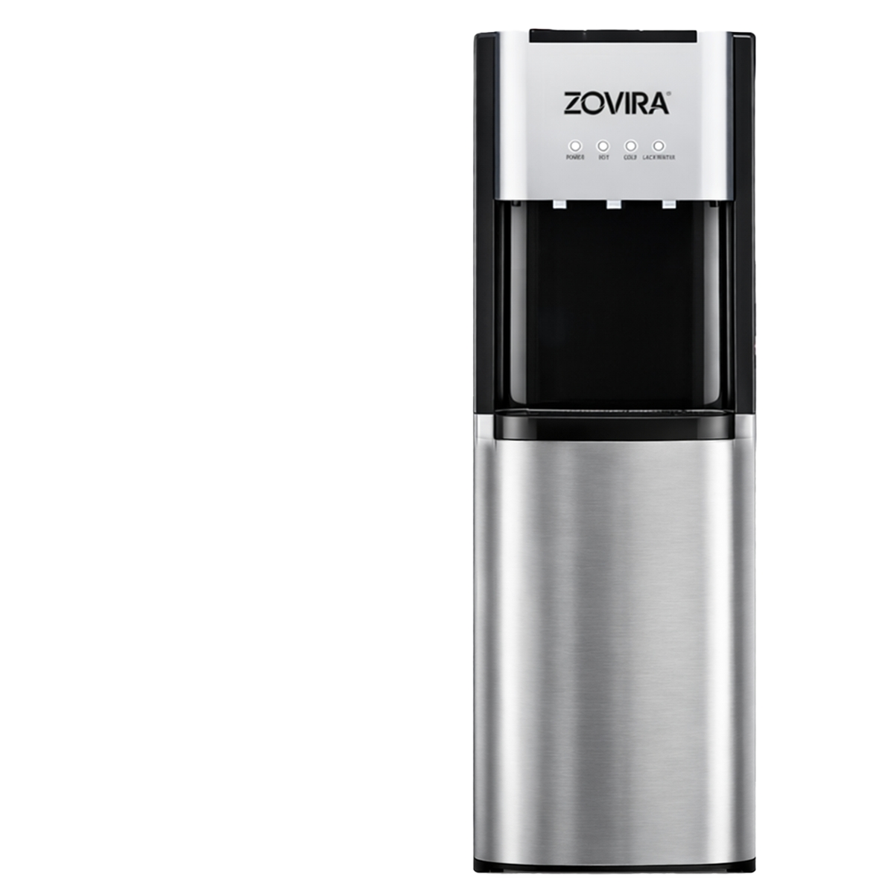
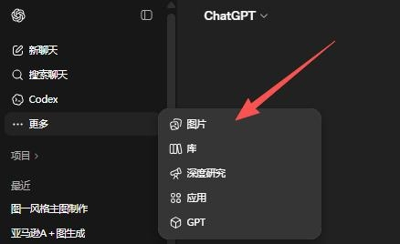

Hermes 管理面板

本轮内容聚焦两件事：一是 Hermes 在本地与多端环境中的落地验证； 二是 GPT-Image-2 从白底产品图到营销页面的生成质量评估。



这部分重点不是“展示安装过程”，而是呈现已经打通的实际形态：管理面板可用、CLI 可运行、飞书侧可正常响应。
已完成 Hermes 本地部署与基础使用验证，确认 Agent 在本地环境运行可行，并且可接入多端消息场景。
核心价值不只是本地运行，而是已经具备连接面板、终端工作流和飞书回复能力的基础，后续可继续扩展自动化链路。
继续围绕消息联动、自动化任务和跨平台通知进行真实流程验证。


这里按真实流程展示：输入素材 → 图片入口 → 两版输出结果。这样能更直观地说明模型已经能完成从产品图到营销版面的扩展。

单张白底产品图，主要测试模型能否自动补全卖点、场景与版式结构。

通过 ChatGPT 的“更多 → 图片”进入图片生成流程，作为本次测试入口。
输入为单张白底产品图，输出为完整营销页，重点考察版式补全、卖点组织和视觉完成度。
能较快延展出完整的 A+ 风格页面，自动补充场景、卖点模块和版式，适合前期提案与创意探索。
产品一致性与文字准确率仍有限，高精度控制场景尚不稳定。更适合作为营销初稿工具，不建议直接替代正式商用交付。
两项能力都已具备继续推进的基础，但更适合先服务于提效、探索与前期生产，而不是直接替代最终交付。
本地部署已验证可行，且已能在控制台、CLI 和飞书侧形成可见成果，下一阶段应继续围绕工作流接入验证实际收益。
已具备较强的营销图初稿生成能力，适合创意提案、版式探索和前期视觉草稿。